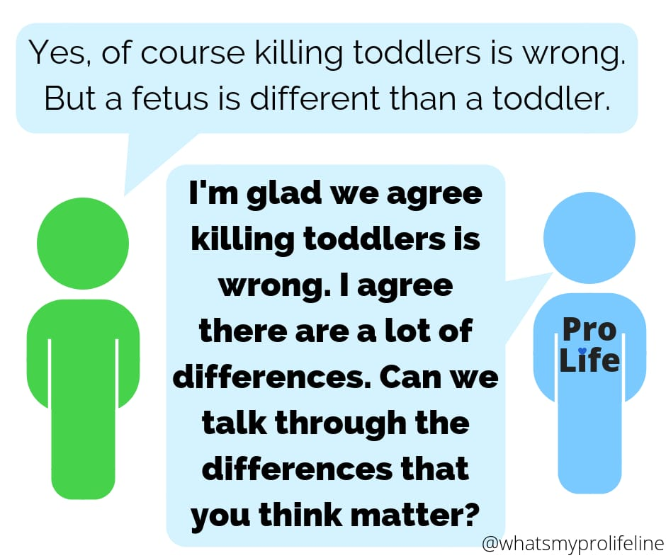

In our experience, most pro-choice people think that because of the nature of a fetus, the fetus doesn't deserve the same basic rights as a toddler. They think abortion is similar to killing a plant or removing a tumor.\n\nWe can agree with our pro-choice peers that fetuses are different than toddlers in many ways. For example, fetuses are smaller and less intelligent than toddlers. However, big people are not worth more than small people. Intelligent people are not worth more than unintelligent people. We think all living human organisms equally deserve basic rights, regardless of race, sex, size, intelligence, age, or anything else.